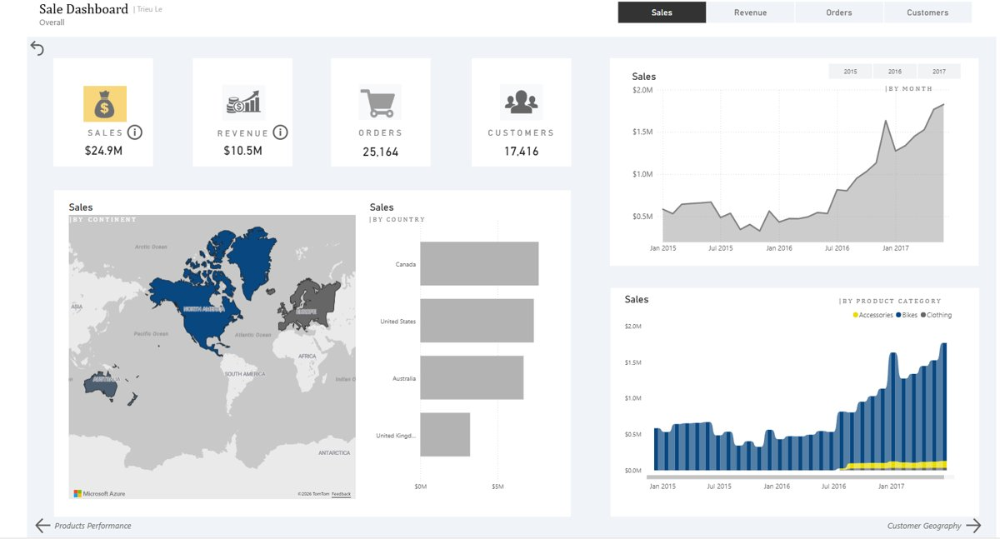
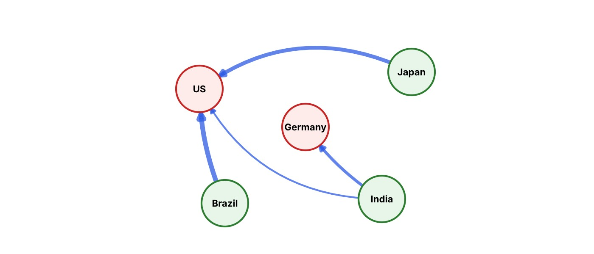
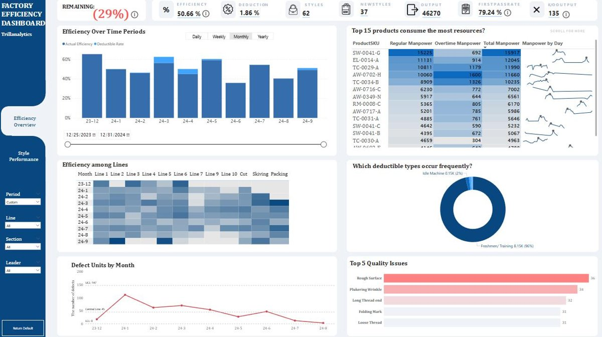

Personal projects
Beyond the day job.
Built out of curiosity.
Side projects where I try new tools and test ideas, from analysis and dashboards to optimization models.
-
Data Analysis
E-commerce Performance Analysis
A billing-page test lifted checkout conversion from 45.7% to 62.7%; desktop ads won orders at 1/4 the cost of mobile.
500K+ sessions · 1.3M+ pageviews · Code on GitHubExplore -

Dashboards
Sales & Products Dashboard
Bikes drive 95% of $24.9M sales, while accessories lead repeat purchases (30% vs. 8% for road bikes).
~56k records · Live Power BI reportExplore -

Optimization
Supply Chain Network Design
Which plants to open and where to ship, tested against uncertain demand: Brazil and India plants stay open in 100% of runs.
1,000 Monte Carlo runs · Full write-upExplore -

Dashboards
Manufacturing Analytics Dashboard
Automated KPI reporting that lifted line efficiency by 15%.
200+ workers · Screenshot onlyExplore
No projects match that search.